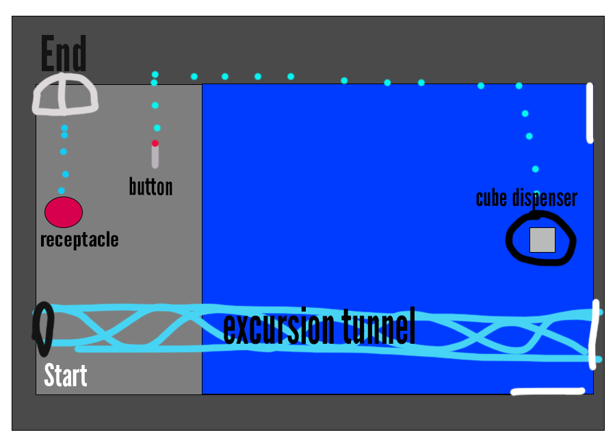
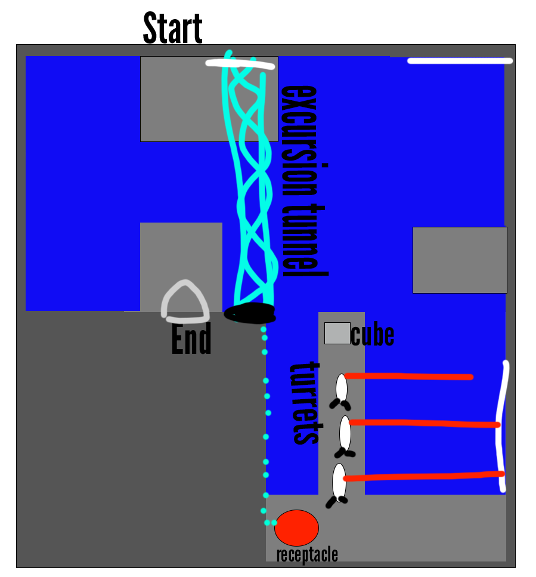
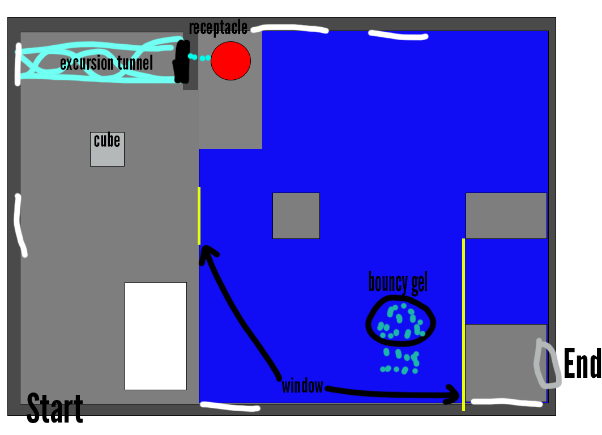
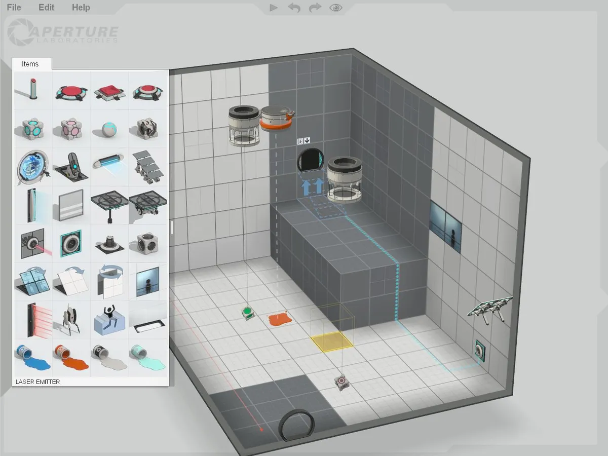

Nick Malone
Level Designer
Nick Malone
Level Designer
As part of my Level Design 1 class, we had a project to create 3 puzzle levels within Portal 2’s in-game editor. The levels are supposed to revolve around a primary mechanic that gets introduced to the player, which then gets reinforced in the next level and applies a twist to it in the 3rd level. The primary mechanic I chose was the excursion tunnel and using it to transport objects which is introduced late in the single player campaign. These levels assume players have knowledge of other mechanics that were introduced before it.
The first level is fairly simple and has a cube dispenser over water. The player needs to use portals to lead the excursion tunnel under the dispenser to catch the cube. Once the cube is caught, it will move closer to a wall where you’ll need to make another portal connection to lead the cube perpendicular back to land in order to complete the level.
The second level has the excursion tunnel connecting to the exit, but it is going in the wrong direction. The player needs to get to the platform before the turrets and use the excursion tunnels to push them off so they can proceed to the receptacle and place the cube on it. The cube will reverse the direction of the excursion tunnel, allowing the player to finally get to the exit.
The third level is the most complex and requires knowledge of the bouncy gel and the velocity that players can get with height and portals. Players must get the cube onto the button to make the excursion tunnel reversed. This will allow you to pull the dispensed blue gel to your portal and allow you to drop it on the middle platform after taking off the cube from the receptacle. From there, the player can use the excursion tunnel to give enough height to do a long jump with the bouncy gel to propel them to the other side. The final part requires the player to reset the cube and place it back to the receptacle so that it can pull them across to the exit.
Portal 2 has an in-game editor which makes it easy to set up levels. Everything snaps to a grid which can help a lot but it's also limited to test chamber content. That means you can’t create anything similar to the 2nd half of the campaign with terrain and broken structures unless you go into the Hammer editor (which can also help connect levels in a sequence). Each puzzle needed to be its separate level for this to work with the in-game editor.
Some levels required more space than what I originally envisioned in the drawings. A lot of this had to do with it feeling cluttered with it being its original size and some sight lines being blocked in the second level which could make things confusing to solve. The white walls were switched up in some areas and in some areas there are more walls to work with. Playtesters suggested some better lighting and some slight tweaks to platforms which were done for the final version.
The puzzles were completed and fulfilled the goal of the 3-step sequence needed for the project. Each level had a rise in difficulty and more mechanics to surround the primary mechanic of the excursion tunnel. The amount of space used worked out well and didn’t feel too small or too big for the puzzles. Lighting could be improved, but the editor is very restrictive on light sources which makes it difficult.